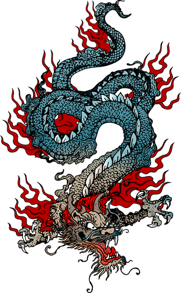

The Hook and the Skein
6,500 years after the First Shearing. Walk Low Vale's drowned roads in a persistent world where every choice leaves a real footprint. Who are you, and what mark will you leave behind?

The Hook and the Skein is a world you read your way into—no twitch reflexes, just a valley that keeps score of every turn you take.
Set 6,500 years after the First Shearing, it begins with work undone, debts still owed, and a community that remembers what you promised and what you broke.
What we're after
Hand-written events and people over throwaway filler—a place with its own memory, closer to reading by lamplight than racing a feed.
Where it stands
The opening chapter in Low Vale is playable now, while deeper regions of the valley are still being built.
Explore the world of The Hook and the Skein
Walk Low Vale's opening chapter or hold the Scar borderlands in Scarward.